2014年心血管系统药物排名前10的品种集中度为57.83%，比13年的56.63%上升1.20%。
新进入前10品种氯沙坦，跌出前10的品种为比索洛尔。与13年比较，前4名品种排名为发生变；阿托伐他汀由13年的11.88%跃升至14.39%，增长2.50%，稳居第一，瑞舒伐他汀钙由3.85%跃升至5.29%，其排名也由第7名上升至第5名；前列地尔市场份额下滑最快，下降0.83%，但排名不变。
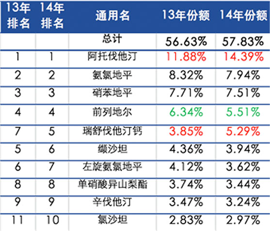
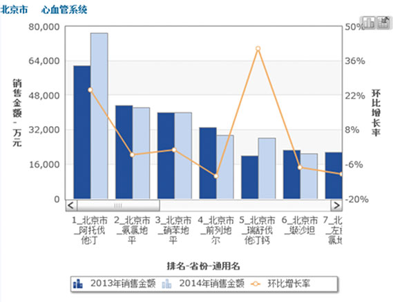
2014年消化道和代谢方面的药物排名前10的品种集中度为59.88%，与13年相比基本持平。
与13年比较，进入前10的品种并无变化，只是市场份额和排名有所变动。骨化三醇市场份额增长最快，取得0.39个百分点的增长，达到4.72%；埃索美拉唑次之，增长幅度为0.37%，排名由第7名上升至第6名；雷贝拉唑由第10名上升至第9名；阿卡波糖以20.54%的市场份额位居榜首。
2014年前10品种中，胰岛素由13年的14.14%下降至13.40%（-0.74%），仍位居第2；奥美拉唑由4.83%下降至4.19%（-0.64%），排名下降至第5；二甲双胍下降幅度较小，以4.34%的市场份额位居第3。
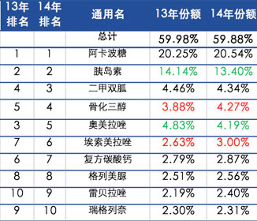
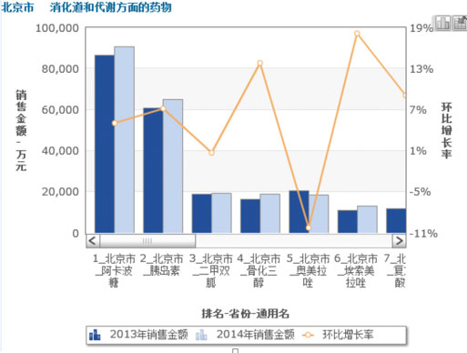
2014年，血液与造血系统药物前10品种市场集中度为73.01%，比13年73.42下降0.41个百分点。
与13年比较，进入前10名的品种并无变化。前10品种中，氯吡格雷市场份额增长最快，由2013年的18.81%%增长到2014年的22.20%，增长3.39个百分点，稳居第1名。人血白蛋白市场份额下降最快，由2013年的13.78%下降到2014年的8.74%，下降5.04个百分点，排名由2013年的第2名下降至2014年的第4名。氯化钠2014年市场份额为9.25%，以0.20个百分点的增长进入前3名，氯化钠作为调节水、盐、电解质及酸碱平衡的普通基础输液，具备广泛的应用基础且价格低廉，因此在医疗机构终端的用药量较大。
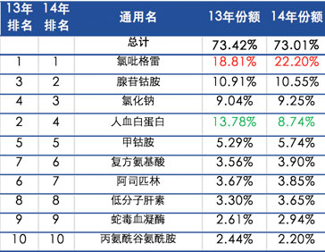
2014年，抗肿瘤和免疫调节剂前10品种市场集中度为37.39%，比13年36.95%上升0.44个百分点。
受政策影响，近两年抗肿瘤和免疫调节剂排名出现调整，与13年相比，新进前10名的品种有胸腺肽，跌出前10位的品种有重组人粒细胞刺激因子。前10品种，胸腺肽市场份额上升最快，由2013年的0.02%上升至2014年的3.75%，增长了3.73个百分点，排名由2013年的第20位跃升至2014年的第4位；干扰素由第4名上升至第2名；胸腺五肽排名市场份额下滑最快，由8.58%下降至6.19，下降2.39个百分点，由于降价调整的优势仍排名第1。
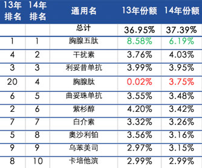
2014年，心脑血管疾病用药中成药前10品种市场集中度为42.02%，比13年42.93%下降0.91%。
与13年比较，进入前10的品种并变化。脑心通市场份额增长幅度最大，由13年的4.12%上升至14年的4.66%，排名上升至第2名；市场份额上升较多的还有培元通脑，份额由3.48%上升至3.83%，排名由第8名上升至第6名；舒血宁市场份额下降，由7.71%下降至6.70%，但排名仍保持第1位。
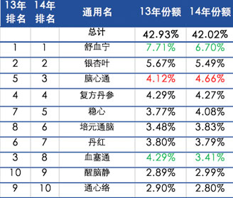
2014年，骨骼肌肉系统中成药前10品种市场集中度为46.43%，比13年45.25%上升1.18个百分点。
与13年比较，排名前5的品种仅活血止痛和金天格互换了位置，其他排名不变。前10品种中，通络祛痛的市场份额增长最快，由13年年的3.48%增长到14年的4.68%，增长1.20个百分点，排名由第7名上升至第6位；龙血竭市场份额下降最快，市场份额由13年的3.59%下降到14年的2.87%，下降0.72个百分点，排名由第6名下降到第8名。
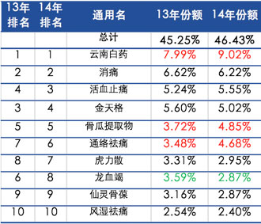
2014年，呼吸系统中成药前10品种市场集中度为42.84%，比13年40.53%提高2.31个百分点。2014年市场份额最大的品种百令超过10%。
与13年比较，新进前10名的品种有小儿豉翘清热，跌出前10名的品种有清开灵。 前10品种中，百令市场份额增长最快，由2013年的9.88%增长到2014年12.00%，增长2.13个百分点，市场份额最大稳居第1名；感冒清热市场份额下降最快，由2013年的3.10%下降至2014年2.43%么下降0.67个百分点，排名由第6位下降至第7位。
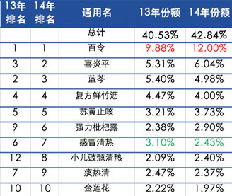
2014年，消化系统中成药前10品种市场集中度为37.26%，比13年33.97增长3.29个百分点。2013至2014年市场份额最大的品种均未超过10%。
与13年相比，新进前10名的品种有摩罗、十味玉泉，跌出前10名的品种有复方鳖甲软肝、六君子。前10品种中，迈之灵市场份额增长最快，由2013年的6.44%增长到7.68%，排名第1。枫蓼肠胃康市场份额下降最快，由3.55%下降到3.29%，排名由2013年的第4位下降到2014年的第7位。
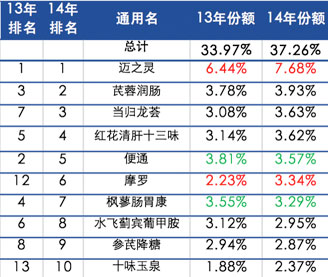
2014年，肿瘤中成药前10品种市场集中度为72.83%，与13年72.96%相比略微下降，下降0.13个百分点。
与13年相比，新进入前10名的品种有香菇多糖，跌出前10名的品种有贞芪扶正，前7位品种排名未发生变化。2014年，前10品种中，康莱特市场份额增长最快，由17.82%上升至20.23%，排名第1；金水宝市场份额下滑最快，由15.18%下降到13.40%，排名保持在第2名。
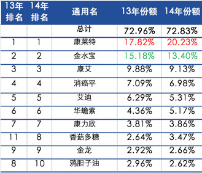